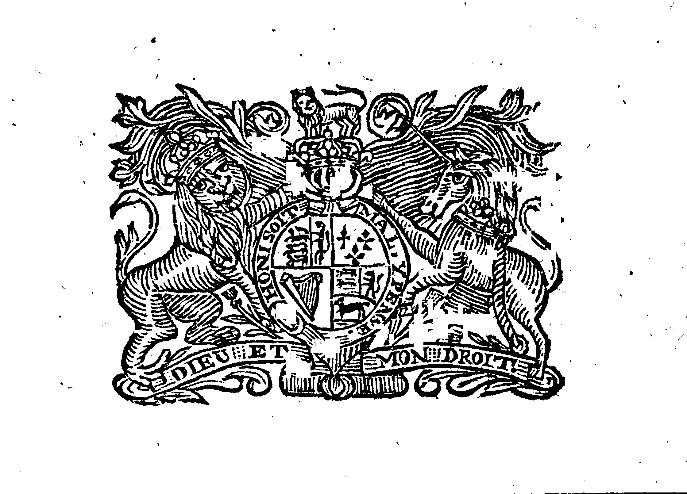
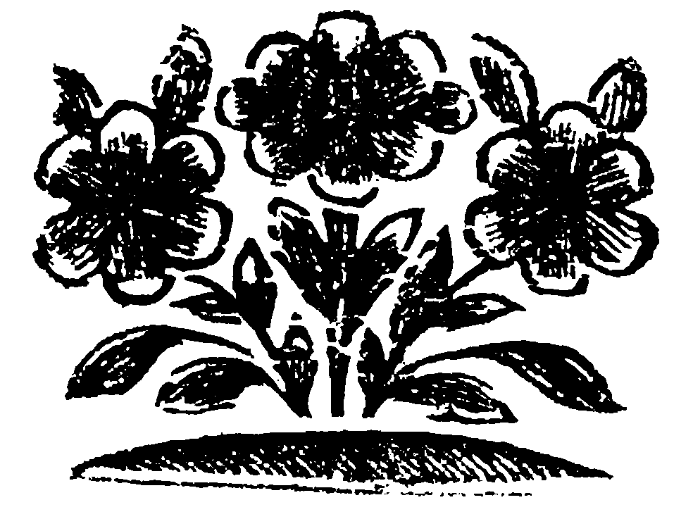

A
TREATY
Between the Government of New-Jerſey,
AND THE
INDIANS
Inhabiting the ſeveral Parts of ſaid Province,
Held at
CROSWICKS
In the County of
BURLINGTON
On Thurſday and Friday the eighth and ninth Day of January, 1756.

PHILADELPHIA,
Printed by WILLIAM BRADFORD,
Printer to the Province of New-Jerſey.
MDCCLVI
ATLANTIC-CITY,
Digitiſed by FREDRICK BRENNAN

,
Printer…
in the
Province of
New-Jerſey,
faithfully, a derivative electrick Booke, dedicated to the publick Good, yet without Guaranty nor Surety of any kind that any Good will actually reſult thenceforth, and given over freely to ſaid publick’s universal Poſſeſſion, for them to enjoy all Rights, Titles, Patentes, &c. in Law over it as does and would do its Author, &c., under all Principalities, Powers, Sovereignties, Realms, Res Publicæ, Tyrannies, Kingdoms, Πολῑτείᾱ, &c.
MMXXII
A
TREATY
between the Government of New-Jerſey,
AND THE
INDIANS
Thurſday the eighth Day of January, 1756.
The Commiſſioners and the following Indians being met.
The Names of the Indians.
|
|
Cranberry Indians,
who paſs by the Engliſh Names.
- Thomas Store,
- Stephen Calvin,
- John Pumſhire,
- Jo. Mikty,
- Thomas Kecahela,
- Iſaac Still,
- William Totaney,
- Oliver,
- Totamy,
- Sam. Goſling, &c.
- In all 27 Men, ſundry Women and Children.
|
Pompton Indians.
- John Cooper,
- Pamaatock,
- Cachcow,
- Young Cawhow,
- John Janaway,
- Cobus Jeroliman,
- Abram Shattaw,
- Weſelſhelahow, &c.
- In all 12 Men.
|
|
Croſwick Indians,
- Quiſh,
- Loulax,
- Andrew,
- Taſhee,
- Teach,
- Pombolus,
- Shockhicman,
- Cuſbee, &c.
- In all 16 Men, ſundry Women and Children.
|
Southern Jerſey Indians,
- John Palmer,
- Peter Tooley,
- Gabriel Mytop,
- Wollis,
- Tom Gale,
- In all 23 Men, beſides Women and Childen [sic].
|
A Commiſſion from his Excellency JONATHAN BELCHER, Eſq; Captain General and Grvernor [sic] in Chief, in and over the Province of Nova-Cæſarea or New-Jerſey, and Territories thereon depending in America, Chancellor and Vice Admiral in the ſame, &c. was publiſhed, impowering the Honourable Richard Salter, Lewis Morris Aſhfield, Charles Read, Robert Lawrence, Samuel Smith, Barzilla Newbold, and Joſeph Yard, Eſqrs; or any three or more of them, to treat with the Indians of the Colony of New-Jerſey, and to agree upon ſuch Things, as they ſhould eſteem conducive to the Peace and Welfare of the Colony. Jacob Hewlings, Eſq; and Stephen Calvin, Interpretors attended, after which the Commiſſioners ſpoke to the Indians as follows.
Brethren,
We are glad to ſee you here in Health, and hope thoſe you have left behind you in your Towns are in Health alſo.
The Reaſon of our meeting you at this Time, is, that we might have an opportunity of talking freely with each other as Brethren ought to do.
We are appointed by the Government, to give you the ſtrongeft aſſurance of the Affection your Brethren of this Colony, have and will always retain for our Brethren the Indians.
If therefore any Thing you know of, that may on either ſide deſtroy the good Agreement that has continued for near one Hundred Years, between your Fathers and ours, you will now have an Opportunity of mentioning it. And we hope you will do it in ſuch a manner as that nothing may hereafter remain to give us or you any Occaſion of Uneaſineſs, therefore we hope you will open your Minds freely.
We grieve for the Sufferings of our Brethren in Pennsylvania, who have ſuſſered much by Indians miſled by bad and wicked Peoples Advice, but we hope an end will be ſoon put to their Murdering your Friends and ours, and beleive [sic] the Indians will by the trouble they will bring themſelves into by hearkening to this wicked Advice, be made to repent of their bad Actions.
We hope none of our Friends and Brethren of this Colony are joined with the Wicked Indians who have been deſtroying the People of Pennsylvania.
And expect you will let us know all you have heard of the Intentions of the Indians, and if any of the Enemy Indians, or any ſtrange Indians ſhould come among you, to put evil and falſe Things into your Heads, you will do well not to believe them, and that you will deliver them to us, as dangerous to our Peace and yours.
As we have heard ſome of the Enemy Indians have been in the upper Parts of this Province, and Murdered one Man, and wounded another, this and the Murders on the other ſide of the River, has made our People who live in the upper Parts of this Colony ſo Angry, that it is become dangerous to any Indians to go there, as they will not in the hurry know Friends from Enemies. Therefore we would have you ſeriouſly conſider with yourſelves, that it will be neceſſary for you to contrive ſome Bounds for your own Security, where you may be ſafe, and our People eaſy with it. And as you are our Brethren, we would have your Advice in this Matter, and if you have any requeſt to make for your own eaſe and both our Security's, you will do well to let us know it, and we ſhall give it due Conſideration.
Then the Indians withdrew.
Friday Morning, January the 9th 1756.
The Commiſſioners met.
The Indians came into Council, and having appointed Ohiockechoque, to ſpeak for them; he delivered in their Names the following Anſwer.
Dear Brethren,
Some of our old Men can remember when the Engliſh were weak and few, and the Indians ſtrong and many. We then nurſed them up in our Boſoms and treated them as Friends. We are glad our Friendſhip hath continned [sic] ſo long, and hope it will always endure. Since our Fathers have ſold ſo large a Part of their Lands to the Engliſh, we find it much more difficult to maintain ourſelves and Families by Hunting, which is at leaſt one half our Support. But a worſe evil than that has come to us, which is the Uſe of ſtrong Liquor, to which the Indians are too much addicted, and by which they are made Weak, Idle, and Quarrelſome, and for ſtrong Drink often ſell thoſe Skins, and other Things, which would provide themſelves and Families with Cloaths and Bread, and for this ſome of the Engliſh are too much to blame.
We beg you will take care to put a Stop to this wicked practiſe, which tho’ it may offend ſome of our fooliſh People at firſt, yet it will at laſt be beſt liked, and be more for the Health of Soul and Body.
The bringing in the bleſſed Goſpel, we eſteem the greateſt advantage we have received by the Engliſh coming among us, and we truſt it hath been a means in the Hand of God to reform the Minds and Manners of a Number of us, and we prefer the Enjoyment of it and living with our Brethren the Engliſh even to Life itſelf. It gives us a real concern, that any of our Acquaintance are joined with the French and their Indians. The Reaſon of their going to them, we beleive [sic] was, that they were ſeduced by Lies and Falſity’s, becauſe the ſame Methods were uſed with us, but without effect. As Times of great Diſtreſs are come on us, as well as you, we are willing to agree as Brethren, upon any Methods for our mutual Peace and Security.
We propoſe the following, which we hope may be effectual.
We who live on this ſide Rariton River, will not on any occaſion, go to the Northward of Rariton River at Brunſwick, and of the great Poſt Road that leads from Trenton to Brunſwick, except in thoſe Town ſpots, but confine ourſelves between the ſaid Poſt Road and Delaware River, to the Sea Shores of this Province, while the War continues, in which Bounds we hope we ſhall always have the free Liberty of Hunting, and beg that good care may be taken, that no Traps ſhall be ſett there, which is of late very frequent and is very dangerous both to you and us.
If any of our Young Men go to War with you, we hope you will put them upon the ſame footing with the Engliſh, and that when our Married Men go to War, you will make ſome Proviſion for their Families.
As ſeveral of us are obliged to leave our Habitations in this time of general Diſtreſs, we pray that ſome Releif [sic] may be provided for ſuch. As it is the Misfortune of ſome of us to be in Debt, and we, for the publick Peace, are willing to deprive ourſelves of ſeveral advantages we formerly enjoy’d, we pray that care may be taken that our Creditors may not be two preſſing, and we promiſe as ſoon as we can, we will honeſtly pay our juſt Debts. We pray that all abuſive Words and Actions, which deſtroy be puniſhed in both Indians and Engliſh. We think we have ſtill ſome Peices [sic] of Land, for which we have received no Conſideration, if it ſhould prove ſo, and we could get the Money for them, we hope we ſhould be able, with ſome Aſſiſtance from our Brethren the Engliſh, to purchaſe a Peice [sic] of Land ſufficient for us all to ſettle together, and have the Goſpel among us, which is our great deſire.
And we Pompton Indians, and others, living beyond Rariton, will confine ourſelves within a Line to be drawn from that Part of the Sound between Staten Iſland and the Main, which is neareſt to John Jolines, to go the neareſt Courſe to the ſaid John Jolines Houſe, and ſtraight three Miles further into the Woods, and ſo by a Line to be drawn thro’ the Woods, at three Miles diſtance, back from the great Road that leads from John Jolines to Elizabeth-Town, Newark, Wezel, and John Jerolimans Mill, near the Falls of Paſſaic, and from the ſaid Falls near Jerolimans Mill to the Fork, and then to Pompton, and then on the neareſt ſtraight Line thro’ Bergen County, to the Jerſey Line on the Shore of the North River, or Hudſons River, and ſo by the Waters to were [sic] it began on the Sound.
We have to complain to our Brethren, that ill minded Perſons are apt to take Advantage of the Indians when they are Drunk, and buy their Lands for a trifle, and often from the Indians who does not own it. And we pray our Brethren, that for the future no Indian Deed or Leaſe may be allowed to be good, but what is made and Signed before the Governor, or two of his Council, who are to have a Certificate from ſix Indians, that the Indian who ſells the Land, is Owner of it, under the Hand of ſome Magiſtrate, who ſees the ſix Indians Sign it, and the Deed to have it wrote on the back, and ſigned by the Governor, or two of his Council, that they ſaw the Certificate of the ſix Indians, Signed by the Juſtice, and that the Indian who ſells the Land, underſtood the Deed, and had a reaſonable Price as common for it.
As ſome bad People have got a long Leaſe from a Drunken Indian for the Indian Lands at Wepink, and for which they pay moſtly, or all in ſtrong Drink, we beg that they may be removed from that Land, and we hope care will be taken that no looſe People ſettle on our Lands, without buying them.
We heartily promiſe our Brethren, that if any ſtrange Indians ſhall come among us, we will immediately give Notice thereof to the next Juſtice or Captain, that they may be ſatisfied for what end they come: And if any Indian ſhould attempt to come among us, to draw us back from our Brethren the Engliſh, we will immediately ſecure them, and deliver them to our Brethren. And as this is our fixed Reſolution, which we deſire may be made publick, we hope our Brethren will not give Credit to reports of ſtrange Indians being among us, when ſuch Stories are told by ill minded People.
And if any of our own People ſhould be unruly or abuſive, we will deliver them up to the Engliſh to be puniſhed.
The Commiſſioners then ſpoke to them as follows.
Brethren,
We have here three Men and ſome Women and Children, in all Seventeen, which were taken in the upper Parts of the Province, where they have lived ſome Years, and ſent down to Trenton Gaol, for both theirs and our own Security, from whence they have been eſcorted here, and are now in the Guard Houſe, we ſhall Order them to be delivered to you, to be examined, and if after due Care and Conſideration of this Matter, you think you can ſafely take them among you, and Anſwer for their Good Behaviour, we will ſhew the Confidence we have in you our Brethren, by releaſing them to you; but if you ſuſpect them, you muſt deliver them back to the Guard. There ſtill remains in Gaol at Trenton, one Phillip an Indian, whoſe conduct has given us great reaſon to ſuſpect him, and whoſe Family is at Wiomen, and we ſhall detain him there till ſomething more appears in his favour. We ſhall wait your Anſwer till the Afternoon.
Friday Afternoon.
The Commiſſioners and Indians being met.
The Commiſſioners ſpoke to them as follow.
Brethren,
We acknowledge the Kindneſs your Forefathers have ſhewn to ours, and we ſhall always Act kindly to you, as we hope you will always deſerve it, as long as the Waters run down Delaware.
We are glad to find you acknowledge that your Fathers have ſold the Land we now poſſeſs to our Anceſtors, and we hope you have received Advantages by the riſing of the Price of your Skins, and Furs, and buying what you wanted at a reaſonable Rate, equal to the Loſs you have ſuffered by the ſcarcity of Deer and other Game.
We are pleaſed to hear that you are ſenſible of the Evils that ariſe by the too great habit of drinking ſpirituous Liquors among the Indians, and we ſhall lay that Matter before the Legiſlature of this Province, and ſhall endeavour to get a Proviſion made againſt that Evil.
It is agreeable to us, to hear that you ſo much Value the Bleſſed Goſpel, and that it has amended the Lives of ſo many of you, and the more you practice the Precepts of it, the better it will be for you.
We are glad that the Lies and Falſities of your and our Enemies, have not been able to draw you off from us, your Brethren, for your true Intereſt is faſt bound to ours.
As to the Bounds you have propoſed for yourſelves, we agree with you as to them, and ſhall take care that you ſhall be ſecure in them.
We hope none of our Brethren will diſtreſs you, unreaſonably, on Account of any Debts you owe them. And we recommend it to you to be Frugal and Induſtrious till you can pay them.
We will lay it before the Legiſlature, to provide againſt your being deceived or defrauded in any Bargains, Grants or Leaſes of Land, that you may make hereafter.
As to your Lands at Wepink, we ſhall make a Report about it, and you may depend upon ample Juſtice being done to you.
We receive kindly the hearty Declarations you make to us, that you will give immediate Notice to the Officers of Government, when any ſtrange Indians come among you, and that you will ſecure ſuch as are your and our Enemies. Let this lay deep in your Hearts, and your fulfilling it punctually, will give us ſure Proofs that you are our hearty Brethren.
We will make theſe your Intentions publick, and make no doubt but this Declaration, which we believe comes from your Hearts, will make your Brethren Love and Eſteem you, and make them unwilling to beleive any falſe Reports to your diſadvantage.
All manner of rude and bad behaviour of the Engliſh and Indians to each other ſhall meet with proper Diſcouragement.
As ſome of our Brethren, have ſuſtained Loſſes by Attachment and Love to their Brethren the Engliſh, We are willing to aſſiſt ſuch of them as have left their Places of abode in their preſent Neceſſity, and ſhall lay the Affair before the Legiſlature for their Conſideration.
As to ſuch of our Brethren the Indians, as will go out to War with our People, which we hope they will chearfully do, when there is occaſion, they will always be put upon the fame footing with their Brethren the Engliſh, as they have been heretofore.
Then the Indians by Ohiackchoque return'd the following Anſwer, to what the Commiſſioners delivered to them this Morning.
Dear Brethren,
We have conſidered what you ſaid to us reſpecting the Indians who were bro't from the back Parts of the Province. We have ſtrictly examined them, and according to the beſt Judgment we are able to frame, we verily believe they had no bad deſigns againſt the Engliſh; but conſidering the deceitfulneſs of Man's Heart, we dare not engage for any but ourſelves, we would be Willing to take them to our Town at Cranberry, and do our utmoſt to Watch over them, but the Fears and Jealouſies of our Engliſh Neighbours, are ſo great, that (as we are informed) it would not be for their or our ſafety to have them among us, and therefore do not chooſe to have any Connections with them, at leaſt for the preſent.
The Commiſſioners afterwards enquired of the Indians, if they had the ſame Objections to the taking them to any of their other Towns, and informed them, that the Commiſſioners would make allowance of ſome Indian Corn towards their ſupport this Winter, as they were removed from their own Habitations. Upon which Quiſh and the Chiefs of the Indian Town in the Branches of Croſwicks, agreed, as nothing appeared againſt theſe Indians, but that they were brought from their Habitation for their own Security, and the Peace of the upper Inhabitants, and that they could not return there again as being out of the Bounds the Indians had preſcribed to themſelves, that they would take them home, uſe them as Brethren, and have a careful Eye over them.
And the Indian Priſoners promiſſed to keep with the Croſwick Indians, and to be have orderly.
And they were delivered to them, whoſe Names were Abraham Lewis, John Price, John Phillip, and Twelve Women and Children.
And the Commiſſioners informed them, that they would Order ſome Corn for the relief of thoſe who have ſuffered by their Love to us, and by being drove from their Habitations.
And the Treaty broke up, and the Indians next Day went in an orderly Manner to their Towns.
What follows is added by Order of the Commiſſioners.
It appeared to the Commiſſioners in the Courſe of this Treaty, that the Indians of Suſquehannah, have for three or four Years paſt, uſed many Endeavours to carry of [sic] to Suſquehannah all the Indians from this this Province, and have brought Belts of Wampom, in the Name of the Mohocks, to Order them to remove, tho’ the Indians never believed them to have been ſent by the Mohowks, and have refuſed to leave us.
The Commiſſioners are convinced of the Sincerity of the Indians of this Province, and recommend it to the Inhabitants to uſe them kindly, to be careful not to ſupply them with ſtrong Drink, whereby many diſorders may be prevented.
They alſo requeſt the Inhabitants not to uſe aggravating Language to the Indians, whereby rude and threatning Expreſſions may be drawn from them in their Drink, and thoſe improved into Tales to alarm weak People and raiſe ill Blood between the Inhabitants of the Colony and the Indians, which ought to be ſuppreſſed by all Means.
They recommend it to the Inhabitants to conſider whether any Thing but their Love and Friendſhip to us, could have prevented their being new among our Enemies, and for this token of their Affection for us, they are intitled to our Friendſhip.
As the ſpreading of reports, without a good Foundation, can only ſerve to give the Inhabitants uneaſineſs, they requeſt them carefully to ſuppreſs all Idle Stories, as they will tend to deſtroy their own Quiet and Repoſe.

License of this electronic publication (ePub)
Creative Commons Legal Code
CREATIVE COMMONS CORPORATION IS NOT A LAW FIRM AND DOES NOT PROVIDE LEGAL SERVICES. DISTRIBUTION OF THIS DOCUMENT DOES NOT CREATE AN ATTORNEY-CLIENT RELATIONSHIP. CREATIVE COMMONS PROVIDES THIS INFORMATION ON AN "AS-IS" BASIS. CREATIVE COMMONS MAKES NO WARRANTIES REGARDING THE USE OF THIS DOCUMENT OR THE INFORMATION OR WORKS PROVIDED HEREUNDER, AND DISCLAIMS LIABILITY FOR DAMAGES RESULTING FROM THE USE OF THIS DOCUMENT OR THE INFORMATION OR WORKS PROVIDED HEREUNDER.
Statement of Purpose
The laws of most jurisdictions throughout the world automatically confer exclusive Copyright and Related Rights (defined below) upon the creator and subsequent owner(s) (each and all, an "owner") of an original work of authorship and/or a database (each, a "Work").
Certain owners wish to permanently relinquish those rights to a Work for the purpose of contributing to a commons of creative, cultural and scientific works ("Commons") that the public can reliably and without fear of later claims of infringement build upon, modify, incorporate in other works, reuse and redistribute as freely as possible in any form whatsoever and for any purposes, including without limitation commercial purposes. These owners may contribute to the Commons to promote the ideal of a free culture and the further production of creative, cultural and scientific works, or to gain reputation or greater distribution for their Work in part through the use and efforts of others.
For these and/or other purposes and motivations, and without any expectation of additional consideration or compensation, the person associating CC0 with a Work (the "Affirmer"), to the extent that he or she is an owner of Copyright and Related Rights in the Work, voluntarily elects to apply CC0 to the Work and publicly distribute the Work under its terms, with knowledge of his or her Copyright and Related Rights in the Work and the meaning and intended legal effect of CC0 on those rights.
1. Copyright and Related Rights. A Work made available under CC0 may be protected by copyright and related or neighboring rights ("Copyright and Related Rights"). Copyright and Related Rights include, but are not limited to, the following:
- the right to reproduce, adapt, distribute, perform, display, communicate, and translate a Work;
- moral rights retained by the original author(s) and/or performer(s);
- publicity and privacy rights pertaining to a person's image or likeness depicted in a Work;
- rights protecting against unfair competition in regards to a Work, subject to the limitations in paragraph 4(a), below;
- rights protecting the extraction, dissemination, use and reuse of data in a Work;
- database rights (such as those arising under Directive 96/9/EC of the European Parliament and of the Council of 11 March 1996 on the legal protection of databases, and under any national implementation thereof, including any amended or successor version of such directive); and
- other similar, equivalent or corresponding rights throughout the world based on applicable law or treaty, and any national implementations thereof.
2. Waiver. To the greatest extent permitted by, but not in contravention of, applicable law, Affirmer hereby overtly, fully, permanently, irrevocably and unconditionally waives, abandons, and surrenders all of Affirmer's Copyright and Related Rights and associated claims and causes of action, whether now known or unknown (including existing as well as future claims and causes of action), in the Work (i) in all territories worldwide, (ii) for the maximum duration provided by applicable law or treaty (including future time extensions), (iii) in any current or future medium and for any number of copies, and (iv) for any purpose whatsoever, including without limitation commercial, advertising or promotional purposes (the "Waiver"). Affirmer makes the Waiver for the benefit of each member of the public at large and to the detriment of Affirmer's heirs and successors, fully intending that such Waiver shall not be subject to revocation, rescission, cancellation, termination, or any other legal or equitable action to disrupt the quiet enjoyment of the Work by the public as contemplated by Affirmer's express Statement of Purpose.
3. Public License Fallback. Should any part of the Waiver for any reason be judged legally invalid or ineffective under applicable law, then the Waiver shall be preserved to the maximum extent permitted taking into account Affirmer's express Statement of Purpose. In addition, to the extent the Waiver is so judged Affirmer hereby grants to each affected person a royalty-free, non transferable, non sublicensable, non exclusive, irrevocable and unconditional license to exercise Affirmer's Copyright and Related Rights in the Work (i) in all territories worldwide, (ii) for the maximum duration provided by applicable law or treaty (including future time extensions), (iii) in any current or future medium and for any number of copies, and (iv) for any purpose whatsoever, including without limitation commercial, advertising or promotional purposes (the "License"). The License shall be deemed effective as of the date CC0 was applied by Affirmer to the Work. Should any part of the License for any reason be judged legally invalid or ineffective under applicable law, such partial invalidity or ineffectiveness shall not invalidate the remainder of the License, and in such case Affirmer hereby affirms that he or she will not (i) exercise any of his or her remaining Copyright and Related Rights in the Work or (ii) assert any associated claims and causes of action with respect to the Work, in either case contrary to Affirmer's express Statement of Purpose.
4. Limitations and Disclaimers.
- No trademark or patent rights held by Affirmer are waived, abandoned, surrendered, licensed or otherwise affected by this document.
- Affirmer offers the Work as-is and makes no representations or warranties of any kind concerning the Work, express, implied, statutory or otherwise, including without limitation warranties of title, merchantability, fitness for a particular purpose, non infringement, or the absence of latent or other defects, accuracy, or the present or absence of errors, whether or not discoverable, all to the greatest extent permissible under applicable law.
- Affirmer disclaims responsibility for clearing rights of other persons that may apply to the Work or any use thereof, including without limitation any person's Copyright and Related Rights in the Work. Further, Affirmer disclaims responsibility for obtaining any necessary consents, permissions or other rights required for any use of the Work.
- Affirmer understands and acknowledges that Creative Commons is not a party to this document and has no duty or obligation with respect to this CC0 or use of the Work.